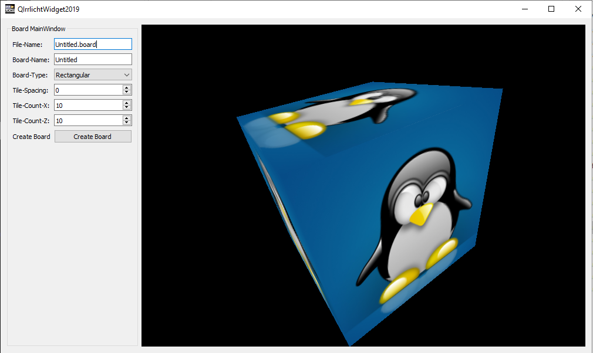

QIrrlichtWidget2019 (C++, QtWidgets) |
2019 |
- de-irrlicht-1.8.5 ( Irrlicht 3D engine standalone version, includes bzip2, jpeg8d, png1.6, zlib1.28 )
- QtSDK (gui)
|
|
This workspace is again completly standalone and not interested what libraries u have or have not installed
on your system.
|
|
Irrlicht is a nice, platform independent 3d engine i love since 2008 or so.
My own code and engines are in Irrlicht style, because it is a good example of good C++ code.
I enabled some of irrlichts own examples like the model viewer that dont depend on resources.
|
|
With irrlicht you can load animated HalfLife1/CounterStrike .mdl models and Quake3 .bsp files.
Has several render backends like DirectX9c, OpenGL and software emulation ( burning engine )
so it always draws something.
|
Download: (full) Sources + Binaries |
 ./QIrrlichtWidget2019.7z10,7MB
./QIrrlichtWidget2019.7z10,7MB |
Screenshot: cpp_Irrlicht_qt_001.png |
|  |